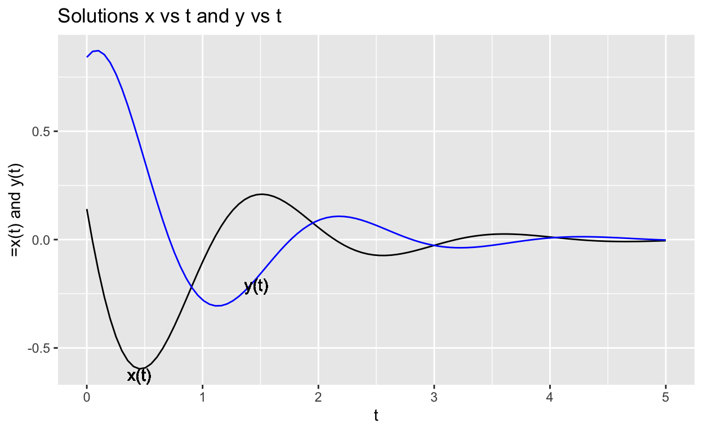
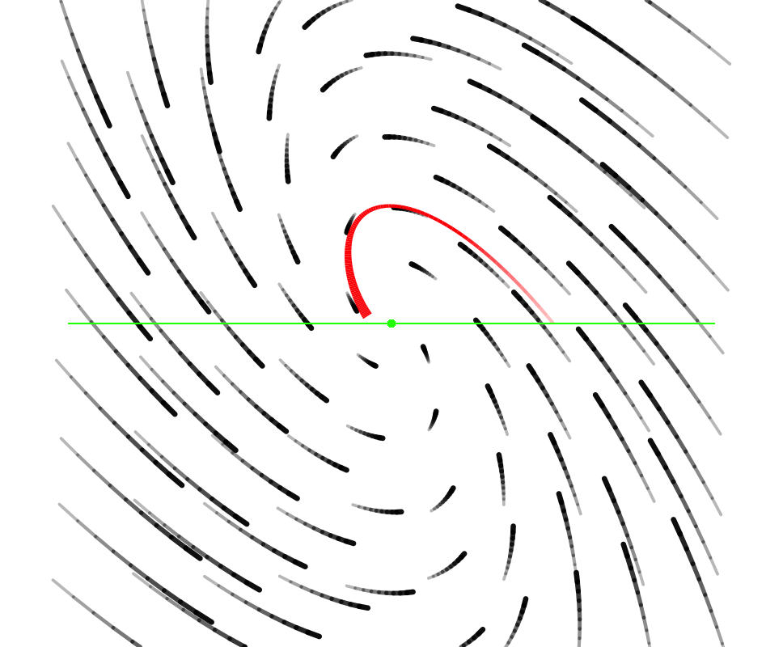
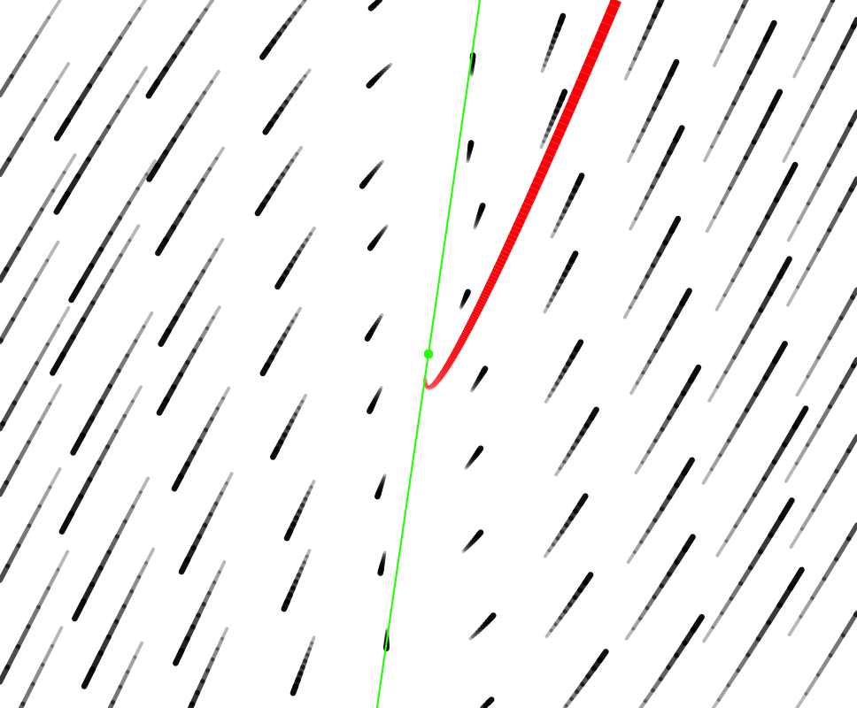
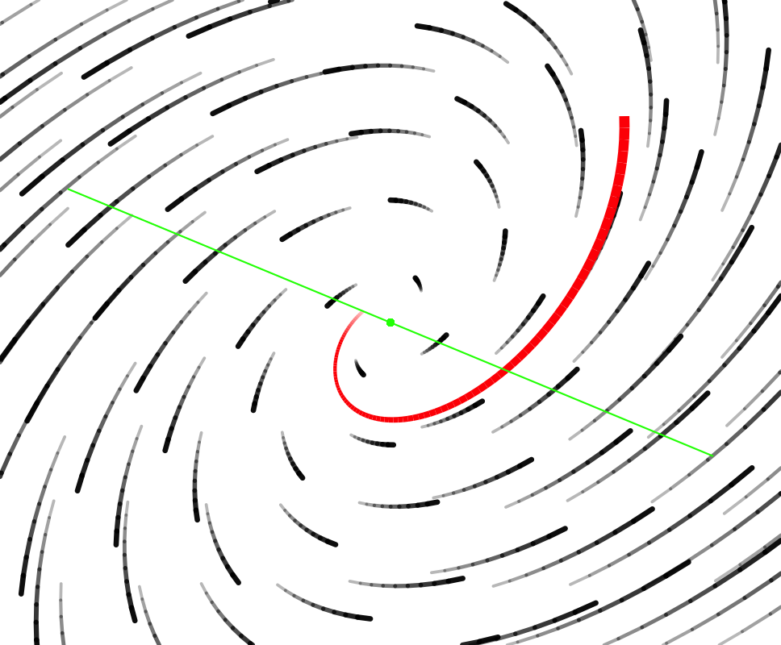

Objectives
- Consolidate the components of dynamics—solutions, dynamics, trajectories, time series, fixed points, eigenvalues and eigenvectors—into a unified understanding.
- Master specific dynamics-related calculations: finding fixed points, finding eigenvalues, confirming that a proposed eigenvector is right, sketching time series from eigenvalues, sketching trajectories from eigenvalues and eigenvectors.
Dynamical systems: State and Dynamics
Differential equations provide an important type of model for systems that change in time.
A system is something made up of two or more interacting components. A dynamical system has a state and a dynamical rule. Typically the state is a set of numbers. In CalcZ, we consider states consisting of one number, and states consisting of two numbers. We call these one-dimension and two-dimensional systems respectively.
A change of state is a set of numbers, one for each component of the state, which tells how fast the state is changing. In other words, the change of state is the derivative with respect to time of the state.
A dynamical rule consists of one function for each dimension of state. The function takes the state as input, and returns the change-of-state with respect to time.
A differential equation is a kind of sentence saying, “This is the state and dynamical rule for a dynamical system.” The differential equation defines the system. Perhaps it’s best to read "\(\dot{x} =\ ...\) or \(\partial_t x = \ ...\) as
“the dynamics of the changing quantity \(x\) is defined to be …” followed by a function of \(x\) to the right of the \(=\) sign.
It doesn’t matter if you use \(\partial_t x\) or \(\dot{x}\) or even \(dx/dt\) on the left hand side of the equation: they all mean the same thing. Think of them as dialects of mathematical language spoken in different fields.
Here are six examples of differential equations, labeled (A) through (F).
- \(\partial_t\, x = b\, \sin(x)\)
- \(\dot{x} = r\, x\)
- \(\dot{x} = r\, x\, (1 - x/K)\)
- \(\left\{\begin{array}{ll}\dot{x} = 2\, x -3\, y\\\dot{y} = 1\, x + 2\, y \end{array}\right.\)
- \(\dot{\mathbf X} = {\mathbf A} {\mathbf X}\), for instance \({\dot{\mathbf X}} = \left[\begin{array}{cc}a & b\\c & d\end{array}\right] {\mathbf X}\)
- \(\left\{\begin{array}{ll}\dot{S} = -\beta\, S\, I\\ \dot{I} = \beta\, S\, I - \alpha\, I\\\dot{R} = \alpha\, R\end{array}\right.\)
It’s helpful to have a systematic process for reading a differential equation.
Step 1) Identify the symbol(s) representing the state and what is the dimension of the state.
Equations (A-C): The state is \(x\) and has one dimension.
Equation (D): There are two derivatives on the left-hand side of the equation, \(\dot{x}\) and \(\dot{y}\). This indicates that the state is the pair \((x, y)\), a two-dimensional state.
Equation (E): The very compact form \(\dot{\mathbf X} = {\mathbf A} {\mathbf X}\) is using vector/matrix notation (the symbols in bold face). We cannot tell yet what the dimension of vector \(\mathbf X\) is. The example \({\dot{\mathbf X}} = \left[\begin{array}{cc}a & b\\c & d\end{array}\right] {\mathbf X}\) shows the shape of the matrix \(\mathbf A\). Here we can see that the state must be two-dimensional. Is the state one-dimensional or two-dimensional?
Step 2) Identify the dynamical rule(s). These will always be functions of the state and may include parameters, which are simply symbols standing in for numerical quantities.
Equation A) The state is \(x\) and the dynamical function is \(a \sin(x)\). Since \(a\) is not part of the state, it must be a parameter.
Equation B) The state is \(x\) and the dynamical function is \(a x\). That’s a very simple function, but it’s also very common in models.
Equation C) The state is \(x\). The dynamical function \(r x (1 - x/K)\) has two parameters: \(r\) and \(K\).
In vector/matrix notation such as \(\dot{\mathbf X} = {\mathbf A} {\mathbf X}\) , it can seem that there is only one one function. Here, that’s \({\mathbf A} {\mathbf X}\). But remember, such multiplication of a matrix times a vector amounts to a vector of functions, as in Equation (D).
QUIZ-TYPE QUESTIONS
Four of the five choices given are differential equations. But \(x(t) = C e^{kt}\) is not. Recall that the grammar of a differential equation is
[Derivative of state with respect to time] = [Dynamical function(s) that take state as the input]
\(x(t)\) is not a “derivative of state with respect to time.”
The other four choices are all differential equations: they have \(\dot{x}\) on the left of the \(=\) sign.
To answer the question, we have to figure out which of the four choices for dynamical function is direct proportionality to the state. The “direct proportionality function” is a constant times the input to the function, e.g. \(a\, x\) or \(-k\, x\) or \(r\, x\) or even, for a vector state, \({\mathbf A} {\mathbf X}\)
You have been given a differential equation \[\dot x = 0.2\, x\left(1-\frac{x}{50}\right)\] You can see that the state is one-dimensional, represented by the symbol \(x\).
On the right side of the \(=\) sign is the dynamical function. Since the state at time \(t=0\) is \(x(t=0) = 70\), you can use the function to calculate the change-in-state at time \(t=0\). This will be 0.2*70 * (1-70/50) giving \(-5.6\). A negative change in state means that at time \(t=0\) the state is decreasing.
Notice that the question asks whether \(x(t)\) is increasing or decreasing. The is a question about the solution to the differential equation, not just the instantaneous rate of change of \(x\) at \(t=0\). To be able to answer that, it helps to be able to recognize that \(r x (1-x/K)\) is one of the specific dynamical functions we’ve studied in detail. (See the section on “Common Models.”)
Solutions
A differential equation is a description of how a system works. The format for that description involves an instantaneous state, for instance \(x\) or \((x,y)\), and a dynamical rule, for instance \(-rx(1-x/K)\). The differential equation says “the instantaneous rate of change of the state” (e.g. \(\dot{x}\)) is set by this dynamical rule (e.g. \(-rx(1-x/K)\)).
When using a differential equation for some modeling purpose, one of the most common tasks is to find a family of solutions. Often, all you will need is a qualitative description of the family of solutions, for instance, “oscillatory exponential decay to a fixed point,” or “a saddle”, etc.
But it happens that sometimes you need to be very specific, for instance by giving a quantitative definition for a function \(x(t)\) that satisfies the differential equation.
Given some function of time \(x(t)\), how can we confirm that it is a solution? Plug it into the differential equation and see if the equality continues to hold. For instance, suppose the differential equation is \[\dot{x} = a x\] (which is a very common form in modeling).
Your friend Abby offers a possible solution, the function \(x(t) = t^2\).
Your study group leader Leslie says, no, the solution is \(x(t) = B\, e^{at}\)
Your lab partner Skyler says that the solution is \(x(t) = A e^{\lambda t}\).
And, Yael, an acquantance, offers the possible solution \(x(t) = A \sin(\omega t)\)
How can we determine who, if anyone, is right.
For each friend, use the proposed solution to calculate the left side of the differential equation \(\partial_t x(t)\) and separately calculate the right side of the differential equation. In our example, \(\dot{x} = a x\), the right side is \(a x(t)\). Then check if the left side is actually equal to the right side. Let’s try this for each of our four proposals.
Abby: \(2 t \overset{?}{=} 2 a t^2\). The equal sign has a question mark because we seek to find out if the two sides are indeed equal. Here that’s not the case. So Abby is just plain wrong. What’s more, Abby’s \(t^2\) is not a family of solutions: there is only one function \(t^2\). If she had given \(t^n\) or \(a t^2\) or \(a t^n\), we would at least have had a family of functions. But none of them would have been solutions to the differential equation.
Leslie: \(a B\, e^{at} \overset{?}{=} a B\, e^{at}\). Yes, obviously. So Leslie is right! But notice that the equation will be true for *any \(B\). Leslie has given us a family of solutions, not just a single solution. For instance, \(2 e^{at}\) is a solution, as is \(2.351 e^{a t}\), as is ….
Skyler: \(A \lambda e^{\lambda t} \overset{?}{=} a A e^{\lambda t}\). It’s harder to say whether this is right. So simplify by dividing both sides by their common term \(A e^{\lambda t}\) getting \(\lambda \overset{?}{=} a\). This will be right or wrong depending on the value of \(\lambda\). Skyler didn’t say what \(\lambda\) is, so we can answer, “Right, Skyler, so long as \(\lambda\) in your solution is set to be the \(a\) from the differential equation.”
Skyler’s solution is in the form of an ansatz: a function involving one or more parameters that are not assigned a specific value. But working with the ansatz might lead us to discover what those parameters must be in order to achieve a genuine solution.
Yael’s solution is also in the form of an ansatz, because we don’t know what \(\omega\) should be. So try it out:
Yael: \(A \omega \cos(\omega t) \overset{?}{=} A \sin(\omega t)\). Regrettably for Yael, there is no possible value for \(\omega\) that can make the proposal true.
The functions offered by Leslie and Skyler are both **families* of functions. Each one has a “free” parameter—\(B\) for Leslie, \(A\) for Skyler—that can be anything at all.
Another common task when using a differential equation is to find a particular value for the free parameter that will cause the solution to match a specific fact. Often, such facts are given as “initial conditions.” For example, \(x(0) = 7\) is an initial condition. Needing to satisfy this specific initial condition would tell Leslie that \(B = 7\), and similarly for Skyler that \(A = 7\).
Initial conditions can come in various forms, for example: \(x(10) = 23\) or \(\left.\partial_t x(t) \right|_{t=0} = 9\).
Quiz Questions
The question prompt provides the solution as a family of functions \(x(t) = \frac{1}{t+C}\), where \(C\) is the free parameter. How did the question-writer find this? No way to know, because the writer didn’t tell us what is \(g(x)\), which is an essential fact to know before trying to find a solution.
You can recognize from the last sentence of the prompt that the question is about an initial condition and might have been rephrased as "What needs to be the specific numerical value of the free parameter \(C\) to make that particular solution match up with the initial condition \(x(0) = 2\).
We know from the given family of solution functions \(x(t) = \frac{1}{t+C}\) that \(x(0) = 1/C\). For the given initial condition \(x(0) = 2\) this will happen when \(C = 1/2\).
The short description of how to answer this is: \(\dot{x} = a x\) is such a fundamental differential equation that you should memorize the solution: \(x(t) = A e^{a t}\) where \(A\) is a free parameter that can be anything and still satisfy the differential equation. Both (a) and (c) are of this form. (And so is (b), to be honest, but only if \(C=0\).)
All four of (a)-(d) are equations with \(x(t)\) on the left side. That’s good, because a solution to a differential equation \(\dot{x} = g(x)\) should always have the form \(x(t)\). (You might notice that (d) does not in fact have a \(t\) in the formula on the right side. Not a good sign!)
Let’s examine proposals (a)-(d) using the plug-in process: calculate \(\dot{x}\) on the left side and \(g(x)\) on the right side.
- \(-\frac{1}{3} 4 e^{-t/3} \overset{?}{=} - \frac{1}{3} x(t) = -\frac{1}{3} 4 e^{-t/3}\). The two sides are obviously equal, so \(4e^{-t/3}\) is a solution!
- \(-\frac{1}{3} e^{-t/3} \overset{?}{=} - \frac{1}{3} x(t) = -\frac{1}{3} (e^{-t/3} + C)\). There are two reasonable answers: the two sides are not equal if \(C\) is to be a free parameter. But if \(C\) is made to be zero (as in an ansatz) the sides are equal.
- \(-\frac{1}{3} e^{-t/3} \overset{?}{=} -\frac{1}{3} x(t) = -\frac{1}{3} e^{-t/3}\). Check.
- The proposal \(x(t) = e^{-x/3}\) isn’t really a function of \(t\). This makes no sense as a solution to a differential equation.
Flows and Trajectories
The concept of “trajectory” is very closely related to that of “solution.” The difference is most easily seen in terms of their graphs.
A solution will be graphed on axes where the vertical axis is one of the state components and the horizontal axis is time.
A trajectory will be graphed such that each component of the state has its own axis and time is not represented explicitly. This is mainly useful in thinking about differential equations whose state has two (or more) components.

Many (most?) people have an easier time making sense of shapes than of algebraic notation. So being able to describe a family of solutions to a differential equation as a shape—spiral in, spiral out, circular orbit, …— can be an effective way to communicate. Of course, such shapes of trajectories have an equivalent description in terms of solutions: exponentially decaying oscillations, exponentially growing oscillations, steady sinusoidal oscillations.
A pretty and effective way to display a dynamical rule is by drawing many short trajectories starting from many different points in the state space. Typically, this is used for systems with 2-dimensional state. These are called flow fields. The examples below each show flow fields in black and a single trajectory in that field in red. The initial condition is the starting point of the trajectory—the thin end of the tail.

Common models
There are four differential equation models that are so commonly encountered that you should memorize the qualitative solutions. For all but one, you should have the quantitative solution readily at hand.
Exponential growth/decay to zero
The model is \[\dot{x} = a x \ \ \implies\ \ \ x(t) = A e^{a t}\] that is to say the dynamical function is a linear (proportional) function. The heading gives the description of the qualitative solution: exponential growth and decay. The free parameter \(A\) in the quantitative solution will be the numerical value of \(x(0)\).
This is a model of population growth and radioactive decay among very many other settings. Whether it’s growth or decay is set by the parameter \(a\): positive for growth, negative for decay.
Exponential growth/decay to a non-zero fixed point
The model is \[\dot{x} = -a (x - K) \ \ \implies\ \ x(t) = K + Ae^{-at}\]
This is most famously “Newton’s Law of Cooling,” where \(x(t)\) is the changing temperature as a function of time and \(K\) is the ambient (e.g. room) temperature. The object’s temperature decays exponentially to the ambient temperature.
Logistic growth to the carrying capacity \(\kappa\)
The model is \[\dot{x} = r x (1 - x/\kappa)\ \ \implies\ \ \ x(t) = \left\{\begin{array}{lcc}\mbox{sigmoidal growth to }\kappa & \mbox{ if } & x(0) < \kappa\\ \mbox{stable at }\kappa & \mbox{ if } & x(0) = \kappa\\ \mbox{exponential decay to }\kappa & \mbox{ if } & x(0) > \kappa \end{array}\right.\]
In some ways, this is like Newton’s Law. Eventually the solution will be approximately exponential decay to the fixed point \(\kappa\).
Why “eventually?” Because when \(0 < x(0) \ll \kappa\) the solution will at first be exponential growth from zero before settling down to exponential decay to the fixed point \(\kappa\).
This model is most famously associated with ecology and the growth of a population in an environment where resources needed for life are limited. The “carrying capacity” is the largest steady population that can be sustained.
Linear 2-dimensional dynamics near a fixed point
We’re writing this model as \[\left\{\begin{array}{l}\strut\dot{x} = a x + b y \\ \strut\dot{y} = x \end{array} \right.\] and calling it the “[ab10]” model.
The [ab10] model is a kind of clay that can be used to build a model of any phenomenon that potentially involves motion up and down: bobbing springs, swinging pendulums, oscillations in circuits, economic cycles, interacting populations near an equilibrium, vibrations in structures, spread of epidemics, and so on.
The [ab10] model has a fixed point at the origin (that is, \((x=0, y=0)\)). This fixed point is either stable or unstable depending on the parameters \(a\) and \(b\). Also, depending on the values of \(a\) and \(b\) the flows will have one of just a few different forms:
- a stable “node”
- an unstable “source”
- a “saddle” which is effectively unstable.
- an unstable (outward) “spiral”
- a stable (inward) “spiral”
Each of these behaviors is “generic,” which is to say that there is a range of \(a\) and \(b\) values that will produce each of them.
Another possible behavior is called a “center,” something between an unstable and a stable spiral. In other words, the trajectory is a closed loop. To be a center, \(a\) must be exactly zero, no plus-or-minus about it. And \(b\) has to be less than zero.
| Sink | Saddle | Source |
|---|---|---|
 |
|
 |
| stable spiral | center | unstable spiral |
 |
 |
Eigenvalues provide the tool to figure out which type the flow will be as a function of parameters \(a\) and \(b\).
Quiz Questions
To answer this question, it helps to notice that the given initial condition \(x(0) = 70\) is above the carrying capacity of 50. So the solution will be exponential decay toward the carrying capacity.
Eigenstuff
We’ve got two types of differential equations where the output of the dynamical function is proportional to the input:
One-dimensional dynamics: \[\dot{x} = a x\] You can easily figure out what the solution looks like. Quantitatively, it’s \(x(t) = A e^{a t}\) where the value of \(A\) corresponds to the initial condition \(x(0)\). Qualitatively, it’s exponential growth when \(a > 0\) and exponential decay when \(a < 0\).
Two-dimensional dynamics: \[\dot{\mathbf X} = {\mathbf A} {\mathbf X} \ \ \mbox{or, more verbosely}\ \ \ \left[\begin{array}{c}\dot{x}\\\dot{y}\end{array}\right] = \left[\begin{array}{cc}a & b\\1 & 0\end{array}\right] \left[\begin{array}{c}x\\y\end{array}\right] \ \ \mbox{or even} \ \ \left\{\begin{array}{ll}\dot{x} = a\, x + b\, y\\\dot{y} = 1\, x + 0\, y \end{array}\right.\]
Actually, you can write such proportional dynamics in \(n\)-dimensional space, but pretty much all the interesting phenomena happen in two-dimensions, so we’ll save such things for later courses.
More commonly we say “linear dynamics” to refer to dynamics where the dynamical rule is proportional to the state. Linear dynamics have some very important properties that make them central to much of science and technology.
- Near enough to a fixed point (sometimes called an “equilibrium”), all dynamics can be effectively treated as linear.
- If you have two different solutions \(x_1(t)\) and \(x_2(t)\) to the same linear differential equation, then the linear combination \(\alpha\, x_1(t) + \beta\, x_2(t)\) is also a solution to that equation.
- Sources, saddles, and sinks in two-dimensional dynamics (and higher!) always have certain directions where the trajectory is a straight-line pointing exactly to the fixed point. These directions are called eigenvectors and we denote them by capital lambda: \({\mathbf \Lambda}_1\) and \({\mathbf \Lambda}_2\).
- Every eigenvector \({\mathbf \Lambda}_i\) is associated with a scalar that we write as lower-case lambda: \(\lambda_i\). The relationship involves the matrix \({\mathbf A}\) of which \({\mathbf \Lambda_i}\) is an eigenvector, specifically that \[{\mathbf A} \cdot {\mathbf \Lambda_i} = \lambda_i {\mathbf \Lambda_i}\]
- When the initial condition is along any of the eigenvectors, the distance from the fixed point is exactly exponential, e.g. \(x(t) = A_1 e^{\lambda_i t}\) and \(y(t) = A_2 e^{\lambda_i t}\). Another way to say this is to write the solution using vector notation: \[{\mathbf X}(t) = \alpha {\mathbf \Lambda_i} e^{\lambda_i t} .\]
Things you can calculate or otherwise figure out
- There is a relatively simple formula for the eigenvalues in terms of the \(a\) and \(b\) parameters in the [ab10] matrix.
\[\lambda_{1,2} = \frac{1}{2}\left[a \pm \sqrt{\strut a^2 + 4b}\right]\]
When the quantity \(a^2 + 4b\) inside the square root is positive then the eigenvalues will be real numbers. If they are both negative, the flow is a sink. If they are both positive, the flow is a saddle. If one is positive and one is negative, the flow is a saddle.
When the quantity \(a^2 + 4b\) inside the square root is negative, then the eigenvalue will be complex numbers, that is, having both a real part and an imaginary part, as in the number \(3 - 2i\). The flow will be spiral. More specifically:
- If \(a < 0\), the flow is a stable spiral.
- If \(a > 0\), the flow is an unstable spiral
- If \(a = 0\), the flow is a center.
There are many other things you might want to know about the quantitative solution to the linear, two-dimensional differential equation, but for us in CalcZ they are unnecessary details. Best to learn them when you have a specific need.
The tasks we emphasize in CalcZ are:
- Given parameters \(a\) and \(b\) in the linear, two-dimensional differential equation, find the eigenvalues \(\lambda_1\) and \(\lambda_2\).
- Given \(\lambda_1\) and \(\lambda_2\), describe the flow qualitatively by examining the real and imaginary parts of the eigenvalues.
- Given an initial condition of the form \({\mathbf X}(0) = m {\mathbf \Lambda_i}\) calculate the solution as \({\mathbf X}(t) = m {\mathbf \Lambda_i} e^{\lambda_i t}\)
Quiz Questions
This simply says, once the state is on an eigenvector, it stays in the direction of that eigenvector.
This is much the same thing, although perhaps unnecessarily confusing by the use of discrete-time dynamics rather than differential equations. We’re told that the initial condition \({\mathbf X}_0\) is an eigenvector. Thus, \({\mathbf X}_1\) and \({\mathbf X}_2\) and … and \({\mathbf X}_n\) will all be multiples of the eigenvector. Since the eigenvalue is \(\lambda=1/2\), we’ll have \({\mathbf X}_1 = \frac{1}{2} {\mathbf X}_0\) and \({\mathbf X}_2 = \frac{1}{2} {\mathbf X}_1 = (\frac{1}{2})^2 {\mathbf X}_0\).
Had this been a differential equation, we would have had \({\mathbf X}(t) = {\mathbf X}(0) e^{t/2}\).
The salient fact to remember here is that when \({\mathbf \Lambda}\) is an eigenvector of matrix \({\mathbf A}\) with eigenvalue \(\lambda\), then \[{\mathbf A} {\mathbf \Lambda} = \lambda {\mathbf \Lambda}\]
You could test the proposition that \({\mathbf X}=\left[\begin{array}{rr}-1\\2 \end{array}\right]\) is an eigenvector by multiplying \({\mathbf A}\) by \({\mathbf X}\).
\[\left[\begin{array}{r}1 & 2 \\4 & -1 \end{array}\right] \cdot \left[\begin{array}{rr}-1\\2 \end{array}\right] = \left[\begin{array}{r}3\\ -6\end{array}\right] = -3 \left[\begin{array}{rr}-1\\2 \end{array}\right]\]
This shows both that \[{\mathbf X}=\left[\begin{array}{rr}-1\\2 \end{array}\right]\] is an eigenvector and that the corresponding eigenvalue is \(\lambda = -3\).
Hand in your work
Location: CalcZ/_DailyDigitals/DailyDocuments/inst/DD-142Z-22/142Z-DD-22.Rmd DD-142Z-22